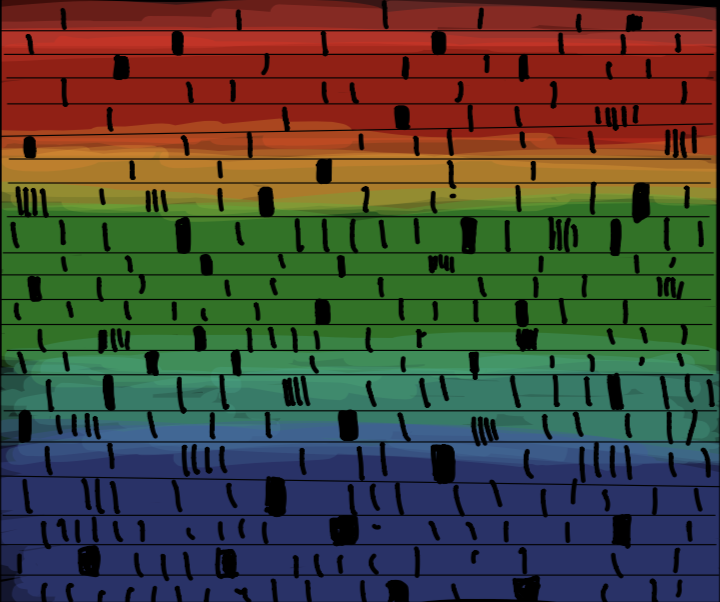

Now we know what the universe is made of and about the forces that govern it. But what's in it? Well the first objects in the universe were the very ones who lit it up...

What makes a star a star?
Well the main reason is that stars emit light when planets and other objects don't. But how do they emit light? They emit light because they have inner fuzion. So ermmm... how does that work? A star is mainly composed of hydrogen, now when it gains enough mass the nucleuses of hydrogen atoms are on to so much pressure that they fuze into a heavier element: hellium. And every time that happens there is a little bit of energy created that is converted into photons which then travel for a long time to the stars surface and then into space.

How many types of stars are there?
Well there are 6 types of stars
- Brown Dwarfs
- Low mass stars
- Stars like the Sun
- High mass red stars
- High mass blue stars
- Neutron stars


How do we know all of those types of stars?
We know all of those stars because of their SPECTRA
Spectra is the light that stars emit but those black lines are the key to everything. With those lines scientists can see what temperature, mass, age and more about that particular star and then with that you organize the stars by those arguments. Stars were usually organized by their hellium suply. But that kind of organization wasn't very precise. So then Annie Jump Cannon organized the stars not by their hellium suply, but by their temperature! She also added numbers next to letters for more percision (Our Sun is a G2 star) and changed the way we organized stars...